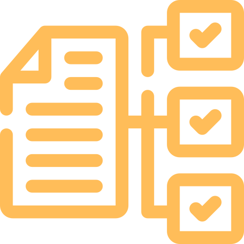

À propos de moi
Diplômé d'un Master MIAGE (spécialisation BI & gestion de projet) et fort de deux ans d'alternance chez Sabena Technics, je transforme des données brutes en outils fiables qui aident à décider : tableaux de bord, pipelines de données et automatisations. Je recherche un poste de Data Analyst ou de Data Engineer.
Chez Sabena Technics, j'ai conçu une interface Power BI reliant les départements Chiffrage et Engineering (+10 % de précision sur les estimations d'heures, soit environ 1,5 M€ de coûts mieux anticipés) et structuré plus de 300 000 heures de production pour l'analyse. Mes outils sont utilisés au quotidien par plus de 30 collaborateurs.
Je développe aussi mes propres projets, comme une plateforme d'analyse sportive dotée d'un assistant IA (RAG). Je suis motivé pour rejoindre une équipe data en France ou à l'international.
Ce que je fais
-
Analyse & BI
Tableaux de bord Power BI (DAX), KPI et reporting qui rendent les chiffres lisibles et aident à prendre les bonnes décisions.
-
Data engineering
Modélisation de données, flux d'alimentation (SQL, Talend, Python) et qualité des données pour des analyses fiables.
-

Gestion de projet & méthodes agiles
Travail avec les équipes métiers, pilotage Agile (Scrum, Jira) et outils livrés qui répondent à un vrai besoin.
-

IA appliquée à la data
Assistants LLM / RAG (LangChain, Text-to-SQL) pour interroger des données en langage naturel.